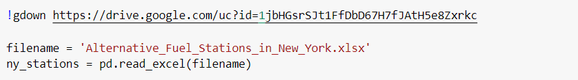
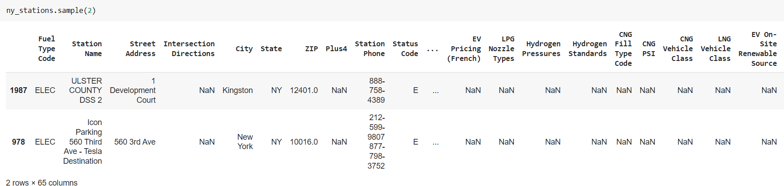
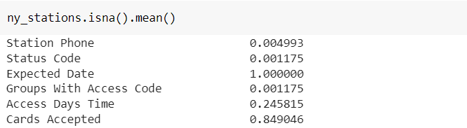
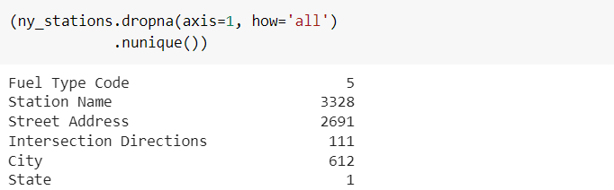
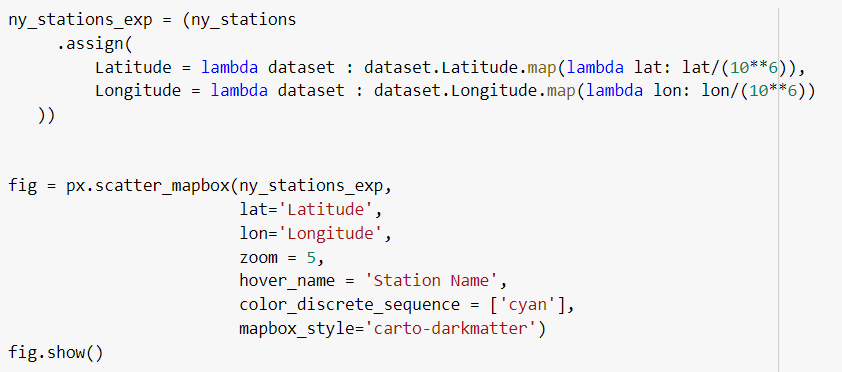
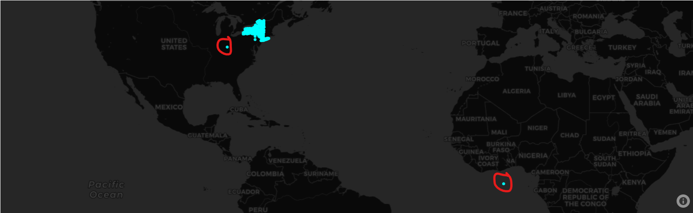
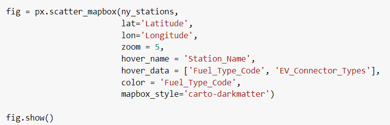
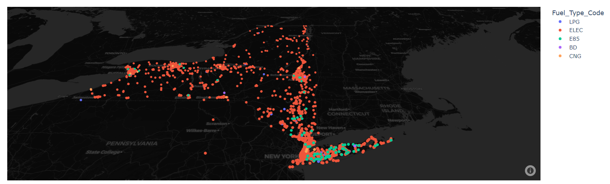
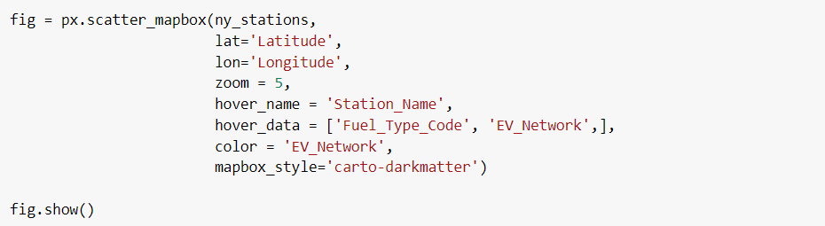
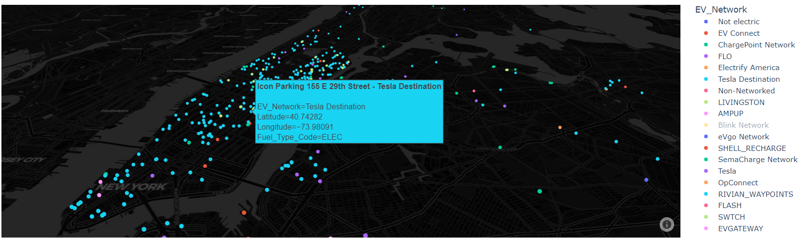

Cleaning a dataset
Alternative fuels, such as electric, hydrogen, and natural gas, are increasingly becoming popular as a more sustainable and environmentally friendly source of energy. It is important for car owners to have access to reliable information of the locations and characteristics of fuel stations that can satisify their needs. Moreover, for data scientists, having access to clean data about this type of fuel stations can be useful for application such as optimal stations locations.
In this case we will tidy up a dataset extracted from the official website of New York State. Like most public datasets, the information regarding these stations is incomplete, contains format errors, which can make it difficult to analyze or use the data effectively. In this article, we will explore the process of cleaning a dataset, discussing the common issues that may arise and the techniques that can be used to address them.
Although the main part of this article will be focused on the cleaning of the dataset, a brief exploration will be proposed aswell as some geospatial visualizations at the end to make the process more interesting and give it some context.
We will start by importing the necessary libraries. Those are pandas, to handle the data; re to manipulate strings using regular expressions and plotly.express for geospatial visualization purposes.

Secondly we will load the data to the notebook, and the load it to a pandas dataframe
Next step is to explore briefly the dataset to have an idea of which the main problems are and start to think on how to address them. The sample method is useful to get a quick view of some random rows of the dataset.
However, using the info method provides more useful information such as the number of non-null variables per colums, the data type of each variable or the dimensions of the matrix
It is important to analyze which variables have a high proportion of null values. We use the mean instead of the sum as it shows more useful information. For example, all the values of the variable Expected Date are null values.
Finally, from those columns that present at least one non-null value, we will list the number of distinct values per variable. The State variables only has one values (NY) as the datases only contains data of one state. Therefore this variable must be filtered out, as it does not provide any useful information.
Visualization tools can also be used during the exploration process. In this case, plotting all the data points within a map allows use to observe that some point have incorrec geographical coordinates. Note that some minor adjustments have been done to the dataset so the library detected correctly the longitude and the latitude.
 Once the exploration of the dataset is complete and the main issues are located, it is time to start with the cleaning process. It is important to note that new issues will probably come out after the initial exploration and would need to be address simultaneously with the cleaning process.
During the cleaning proccess we will make use of method chaining, this way our code will be more clear and the dataframe will not be modified until we end the cleaning process.
Once our dataset is cleaned we can plot in a map the different fuel stations locations, grouping them by differents criteria. In first place, we will divide them by their fuel type.
 In the map it is observed that the density of the alternative fuel stations is highly concentrated in cities such as Buffalo, Rochester, Albany or New York City. Inside the latter one, Manhattan district stands out for the extremely high density of electric fuel stations. Moreover, it is also noted that along all the Long Island area there is a high density of stations that provide E85 Ethanol.
Another interesting plot to consider is to divide the electric fuel stations by their network.
 Zooming into the Manhattan district we can observe that the majority of the fuel stations are controlled by Tesla.